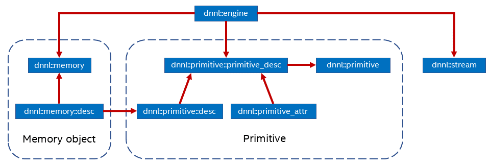

Introduction¶
Although the origins of this specification are in the existing open source implementation, its goal is to define a portable set of APIs. To this end, for example, it intentionally omits implementation-specific details like tiled or blocked memory formats (layouts), and instead describes plain multi-dimensional memory formats and defines opaque optimized memory format that can be implementation specific.
oneDNN main concepts are primitives, engines and streams.
{kind=link}
A primitive (dnnl::primitive) is a functor object that
encapsulates a particular computation such as forward convolution, backward
LSTM computations, or a data transformation operation. A single primitive can
sometimes represent more complex fused computations such as a forward
convolution followed by a ReLU. Fusion, among other things, is controlled via
the primitive attrubutes mechanism.
The most important difference between a primitive and a pure function is that a primitive can be specialized for a subset of input parameters.
For example, a convolution primitive stores parameters like tensor shapes and can pre-compute other dependent parameters like cache blocking. This approach allows oneDNN primitives to pre-generate code specifically tailored for the operation to be performed. The oneDNN programming model assumes that the time it takes to perform the pre-computations is amortized by reusing the same primitive to perform computations multiple times.
A primitive may also need a mutable memory buffer that it may use for temporary storage only during computations. Such buffer is called a scratchpad. It can either be owned by a primitive object (which makes that object non-thread safe) or be an execution-time parameter.
Primitive creation is a potentially expensive operation. Users are expected to create primitives once and reuse them multiple times. Alternatively, implementations may reduce the primitive creation cost by caching primitives that have the same parameters. This optimization falls outside of the scope of this specification.
Engines (dnnl::engine) are an abstraction of a computational
device: a CPU, a specific GPU card in the system, etc. Most primitives are
created to execute computations on one specific engine. The only exceptions
are reorder primitives that transfer data between two different engines.
Streams (dnnl::stream) encapsulate execution context tied to a
particular engine. For example, they can correspond to DPC++ command queues.
Memory objects (dnnl::memory) encapsulate handles to memory
allocated on a specific engine, tensor dimensions, data type, and memory
format – the way tensor indices map to offsets in linear memory space. Memory
objects are passed to primitives during execution.
Levels of Abstraction
oneDNN has multiple levels of abstractions for primitives and memory objects in order to expose maximum flexibility to its users.
On the logical level, the library provides the following abstractions:
Memory descriptors (
dnnl::memory::desc) define a tensor’s logical dimensions, data type, and the format in which the data is laid out in memory. The special format any (dnnl::memory::format_tag::any) indicates that the actual format will be defined later.Operation descriptors (one for each supported primitive) describe an operation’s most basic properties without specifying, for example, which engine will be used to compute them. For example, convolution descriptor describes shapes of source, destination, and weights tensors, propagation kind (forward, backward with respect to data or weights), and other implementation-independent parameters.
Primitive descriptors (
dnnl::primitive_desc_baseis the base class and each of the supported primitives have their own version) are at an abstraction level in between operation descriptors and primitives and can be used to inspect details of a specific primitive implementation like expected memory formats via queries to implement memory format propagation (see Memory format propagation) without having to fully instantiate a primitive.
Abstraction level |
Memory object |
Primitive objects |
|---|---|---|
Logical description |
Memory descriptor |
Operation descriptor |
Intermediate description |
N/A |
Primitive descriptor |
Implementation |
Memory object |
Primitive |
General API notes¶
There are certain assumptions on how oneDNN objects behave:
Memory and operation descriptors behave similarly to trivial types.
All other objects behave like shared pointers. Copying is always shallow.
oneDNN objects can be empty in which case they are not valid for any use. Memory descriptors are special in this regard, as their empty versions are regarded as zero memory descriptors that can be used to indicate absence of a memory descriptor. Empty objects are usually created using default constructors, but also may be a result of an error during object construction (see the next section).
Error Handling¶
All oneDNN functions throw the following exception in case of error.
-
struct
error: public exception¶ The exception class.
Additionally, many oneDNN functions that construct or return oneDNN objects
have a boolean allow_empty parameter that defaults to false and that
makes the library to return an empty object (a zero object in case of memory
descriptors) when an object cannot be constructed instead of throwing an
error.